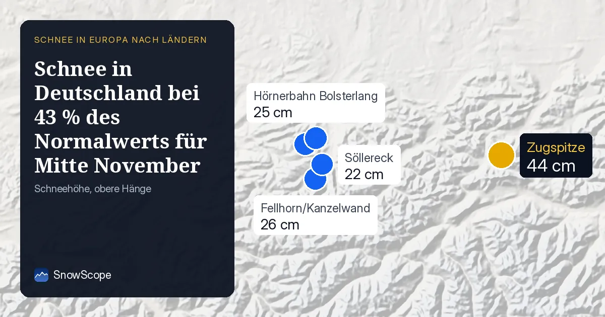

Schnee in Deutschland bei 43 % des Normalwerts für Mitte November
Deutschlands Skigebiete liegen 57 % unter ihrer üblichen Novembererscheinung. Unser Modell zeigt die fünf Hauptgebiete mit einem Median von 43 % der Normalhöhe, ein Defizit, das mehrerer Schneefälle bedarf.
Die Live-Schneeprognose für Zugspitze in der SnowScope-AppSchneehöhen, Pulverschnee-Alarme und 3D-Karte, gratis.
Das Defizit
Mitte November bringt normalerweise anständigen Schnee in die Alpen, doch dieses Jahr hinkt deutlich hinterher. Unser Modell zeigt die Zugspitze mit 12 cm am 16. November, 7 cm unter dem typischen Wert von 19 cm für dieses Datum. Über die fünf Gebiete, die wir regelmäßig überwachen, liegt der Median bei 43 % der saisonalen Durchschnittshöhe. Das wäre für Anfang November nichts Ungewöhnliches (Schnee kann flächig und dünn sein), aber wir sind längst vorbei an der ersten Novemberwoche.
Deutschlands Hochgipfel haben Schnee, ja, aber noch nicht genug davon. Unsere Modelle sind sich dieser Daten sicher; wir haben gute Satellitenbedeckung und die Werte stimmen mit den Mustern überein, die wir vor Ort sehen.
| Skigebiet | Heute | Normal an diesem Tag | Anteil am Normalwert |
|---|---|---|---|
| Zugspitze | 12 cm | 19 cm | 63 % |
| Fellhorn/Kanzelwand | 3 cm | 7 cm | 43 % |
| Grasgehren | 3 cm | 11 cm | 27 % |
| Hörnerbahn Bolsterlang | 2 cm | 7 cm | 29 % |
| Söllereck | 4 cm | 4 cm | 100 % |

So sieht November normalerweise aus
Historische Daten zeigen, was ein normaler 16. November bringt. Die Zugspitze trägt normalerweise 19 cm, in starken Jahren aber bis zu 40 cm. Fellhorn/Kanzelwand hat typisch 7 cm, kann aber bis zu 28 cm erreichen. Grasgehren strebt 11 cm an (Maximum 34 cm). Die niedrigeren Gebiete liegen typisch bei 4-7 cm, können in guten Saisonen aber auf 20-27 cm aufbauen.
Dieses Jahr liegen alle deutlich unter diesen Werten. Nur Söllereck erreicht exakt die Norm mit 4 cm, Glück gehabt bei frühem Staubschnee; die anderen haben den frühen Novemberschnee verpasst, der in früheren Wintern oft auftritt.
Die Rettungsprognose
Bessere Nachrichten kommen in den nächsten Tagen. Die kommenden drei Tage sollten 5 cm bringen, mit einem Höhepunkt am 21. November (15 cm erwartet). Die Siebentagesprognose klettert auf insgesamt 31 cm, das meiste gestapelt in die letzte Woche unserer Vorhersage.
Die Allgäuer Alpen führen das Feld an und bringen vielleicht 7 cm in 72 Stunden, während die Bayerischen Alpen etwa 4 cm ansammeln. Falls diese Prognose stimmt (frühe Vorhersagen können sich verschieben, daher Updates beobachten), sollten Deutschlands Skigebiete bis Ende November zur Norm oder über die Norm klettern und endlich die Saison beginnen.
Schnee lebt in der Höhe
Höhe ist derzeit alles. Unser Modell schätzt, dass über 2000 m die Landschaft völlig weiß ist mit durchschnittlich 13 cm Tiefe. Der 1500-2000 m-Bereich zeigt fast vollständige Bedeckung mit 93 % und 4 cm Durchschnitt - größtenteils fahrbar. Von 1000-1500 m fällt die Bedeckung auf 37 % und nur 1 cm Durchschnitt - flächig.
Unter 1000 m gibt es fast keinen Schnee. Die Schneegrenze liegt bei 1200 m, also brauchen Tieflagengebiete Geduld bis zu den Massenschneefällen im späten November. Hochgelegene Westhänge über 2000 m sind deine beste Wahl diese Woche.
Die Tiefenführer
Die Zugspitze führt die Liste mit 44 cm an (modelliert auf Gebietsseehöhe von 2627 m), obwohl dies die fahrbaren Bedingungen in Mittellage überschätzt. Fellhorn/Kanzelwand hat 26 cm und zog 7 cm in den letzten drei Tagen, was auf einige kürzliche Schneeaktivität hindeutet. Grasgehren, Hörnerbahn Bolsterlang und Söllereck liegen bei 22-25 cm.
Keines der Gebiete bietet aktuell einen tiefen und verzeihenden Untergrund, aber alle werden diese Woche aufbauen.
Das regionale Bild
Deutschland liegt deutlich hinter seinen Alpennachbarn zurück. Österreich zeigt landesweit 38 % Schneebedeckung und führt mit Kaprun bei 83 cm an - ein Vorteil von über einem Meter. Die Schweiz ist noch weißer mit 53 % Bedeckung, mit Ovronnaz bei 136 cm.
Nur 67 von Deutschlands 230 Skigebieten melden Schnee am Boden - die meisten niedrigeren Berge sind schneefrei. Dies ist eine Nord-Alpen-Geschichte; die höheren südlichen Ketten haben diesen Herbst schneller Schnee aufgebaut.
Tipps für Skifahrer
- Beobachte die Allgäuer Alpen und Bayerischen Alpen in den nächsten 72 Stunden genau; hier kommt der beste Neuschnee an.
- Die Zugspitze und Westhänge über 2000 m bieten jetzt die zuverlässigste Schneedecke; tiefere Lagen sind dünn.
- Viele Tieflagengebiete sind erst Ende November vollständig fahrbar; prüfe die Tiefenprognose für dein bevorzugtes Gebiet, bevor du reist.
- Markiere den 21. November in deinem Kalender - der Höhepunkt der Prognose sollte die Bedingungen deutlich verändern.
- Dieser frühe Schnee kann dünn sein und Felsen können durch dunkle Flecken sichtbar werden; bleibe auf präparierten Pisten und prüfe den offiziellen Lawinenbericht, bevor du Off-Piste fährst.
Zu diesen Zahlen
Die Schneehöhen der Skigebiete sind der meiste Schnee in den oberen Hängen laut SnowScope-Schneemodell (etwa 1 km, Lauf vom 16. November); es sind Schätzungen für eine Fläche, keine Messung an einem Punkt. Werte von Messstationen sind Messungen am angegebenen Tag. Prognosen können sich ändern. Lies vor dem Freeriden immer den offiziellen Lawinenlagebericht.
Diesen Bericht zitieren
Für Forschung, Lehre oder Presse: Zahlen und Grafiken sind unter CC BY 4.0 mit dieser Quellenangabe frei nutzbar.
SnowScope (2026), Schnee in Deutschland bei 43 % des Normalwerts für Mitte November, https://snowscope.app/blog/de/2026/11/germany-snow-report-16-november-2026.html, abgerufen am 2026-11-16
SnowScope (Atlas Labs). (2026, November 16). Schnee in Deutschland bei 43 % des Normalwerts für Mitte November. SnowScope snow reports. https://snowscope.app/blog/de/2026/11/germany-snow-report-16-november-2026.html
BibTeX
@misc{snowscope2026germanysnowreport16novem,
author = {{SnowScope (Atlas Labs)}},
title = {Schnee in Deutschland bei 43 % des Normalwerts für Mitte November},
year = {2026},
month = nov,
howpublished = {\url{https://snowscope.app/blog/de/2026/11/germany-snow-report-16-november-2026.html}},
note = {Published 2026-11-16 20:42 UTC; accessed 2026-11-16}
}· CC BY 4.0 · Methoden, Daten und Werkzeuge →
Zugspitze: Schnee und Temperatur nach Höhe, dieser Winter vs letzter (Werkzeuge) →
Zugspitze folgen
Gratis: eine Nachricht, wenn Neuschnee kommt, und jeden Morgen die Vorhersage.